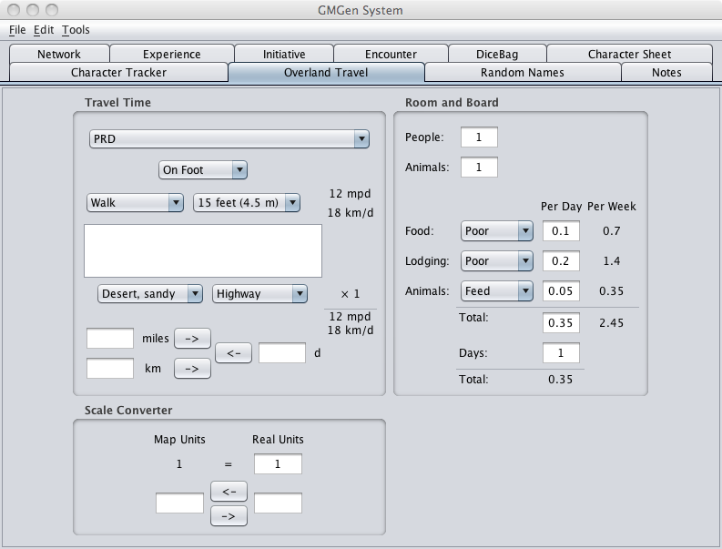

The Overland Travel Tab is a collection of three calculators designed to aid with various aspects of Overland Travel.

Travel Time will calculate travel times based on speed and distance.
Room and Board will calculate the cost of accommodations based on the number of people, animals, days and the quality of the accommodations.
Scale Converter will convert map units into real units.